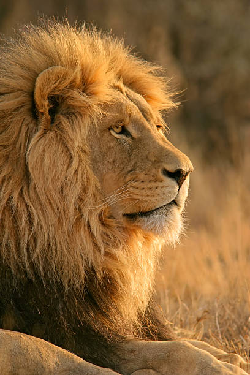
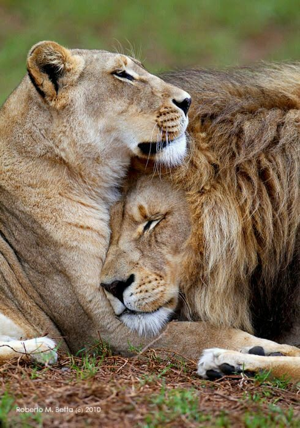

Leão
Africano
da Família Felidae
Os leões africanos (Panthera leo) são animais magníficos e considerados por muitos como os reis da selva. Esses mamíferos, pertencentes à Família Felidae, são encontrados nas savanas africanas, principalmente no leste, sul e oeste da África.
Os leões africanos (Panthera leo) são animais magníficos e considerados por muitos como os reis da selva. Esses mamíferos, pertencentes à Família Felidae, são encontrados nas savanas africanas, principalmente no leste, sul e oeste da África.
Destacam-se também por apresentarem um sistema social, sendo os únicos felinos que vivem em grupo. Esse grupo, composto de 5 a 30 indivíduos, é liderado por um macho ou então por grupos de machos. Nesse grupo também são encontradas fêmeas, normalmente aparentadas geneticamente, e seus filhotes. Os filhotes do sexo feminino, na maioria das vezes, permanecem no grupo até tornarem-se adultos, já os machos eventualmente saem à procura de outro grupo para liderar. Os machos velhos normalmente são expulsos pelos jovens e, em razão da dificuldade que possuem de caçar sem as fêmeas, acabam atacando aldeias a fim de roubar alimento.
"Assim como o leão é reconhecido por sua majestade e coragem, o homem revela sua força interior e liderança quando enfrenta desafios com determinação e ousadia."
- Surgiu: 124.000 anos
- Tipo: Mamífero
- Idade Média: 13 anos
- Macho Adulto: 190kg
- Fêmea Adulta: 130kg
- Família: Felidae
Há cerca de 124 mil anos, subespécies diferentes começaram a evoluir. Por volta daquela época, as florestas tropicais se expandiram na região equatorial da África e a região do Saara se transformou em uma savana.
Leões que viviam ao sul e leste do continente se separaram e começaram a se afastar daqueles que viviam no oeste e no norte. As diferenças genéticas entre estes dois grupos de leões ainda existem nos dias de hoje.